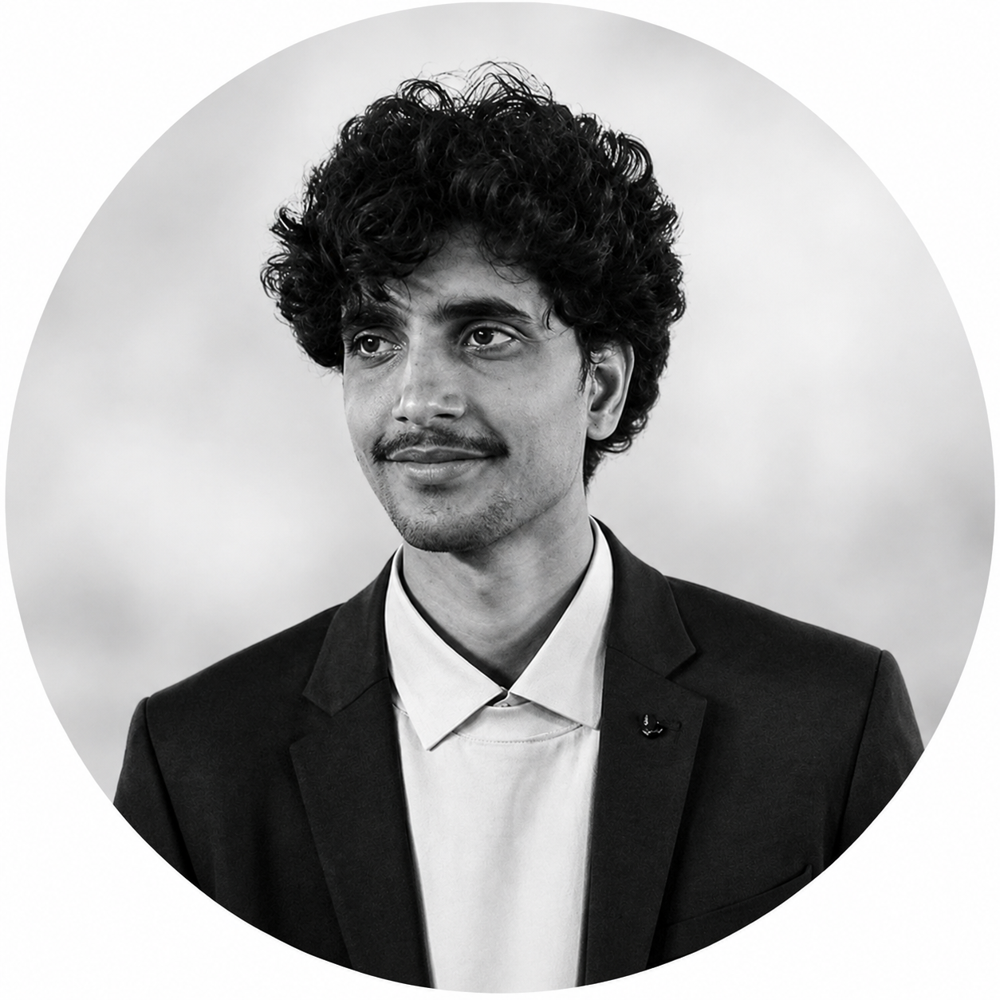

AI/ML Researcher & Developer
Project Associate @ ViSTA Lab, IISc Bangalore
I'm an AI/ML researcher and developer who’s deeply interested in building systems that are not just accurate, but reliable and safe in real-world settings. My work mainly focuses on computer vision, adversarial robustness, and natural language processing. At the core, I’m driven by a simple question: how can we make AI systems people can truly trust?
I’m currently working as a Project Associate at the ViSTA Lab at the Indian Institute of Science (IISc), Bangalore. My work here sits at the intersection of human behavior and machine learning. I use multimodal eye-tracking data along with 3-DOF driving simulators to study how heavy-vehicle drivers handle cognitive load. In particular, I look at how drivers respond to ADAS (Advanced Driver-Assistance Systems) alerts in complex traffic conditions, with the goal of helping design safer and more intuitive driving technologies.
Before this, I worked on model security and computer vision systems. At IIT Jodhpur, I developed attention-guided adversarial patches to assess the robustness of modern object detection models such as YOLO and DETR. During my BS-MS at IISER Bhopal, I worked on evaluating how well image classifiers recognize out-of-distribution data. Across all these experiences, I’ve consistently focused on turning research ideas into practical, scalable AI systems.
Beyond the Lab: Outside of work, I enjoy staying active, running, trekking, and playing table tennis or frisbee whenever I get the chance. In my downtime, I like to relax with video games or simply spend quality time with friends.